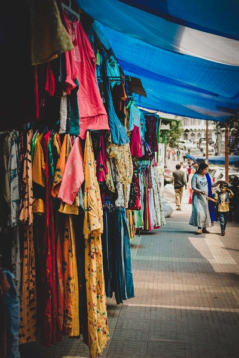

Quienes somos
Ropa hecha a mano
 Cada puntada cuenta una historia de creatividad y calidad.Artesanía en cada puntada
En Clothing, nuestra historia es una odisea apasionante que se teje con hilos de creatividad,
compromiso y amor por la moda hecha a mano. Nuestra marca nació de una profunda apreciación por la artesanía y
el deseo de compartir esa pasión con el mundo.
Desde nuestros humildes comienzos en 2020, hemos cultivado una filosofía que valora la
originalidad y la calidad.
Creemos que la moda es mucho más que prendas; es una forma de expresión, una
narrativa de individualidad y un tributo a la habilidad artesanal.
Cada prenda que creamos en Clothing es
única, confeccionada con el máximo cuidado y atención al detalle.
Colaboramos estrechamente con talentosos artesanos locales que comparten nuestra visión de celebrar la belleza
de la simplicidad y la autenticidad. Nos enorgullece respaldar la tradición artesanal y, al mismo tiempo,
abrazar la innovación y la modernidad en nuestros diseños.
Donde empezó todo
Todo comenzó en un pequeño taller en el corazón de Buenos Aires. En ese modesto espacio, nuestros fundadores,
dieron vida a su visión de fusionar la artesanía con la moda contemporánea. Con
dedicación y habilidad, comenzaron a diseñar y confeccionar prendas únicas que transmitían su amor por la
artesanía.
A lo largo de los años, hemos perfeccionado nuestras técnicas, trabajando en cada prenda con la misma pasión y
atención al detalle que nuestros fundadores inculcaron en nosotros. Cada pieza que creamos es única, hecha con
amor y cuidado, lo que la convierte en algo más que ropa; es una declaración de estilo y autenticidad.